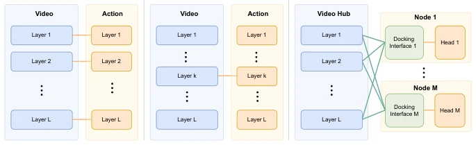
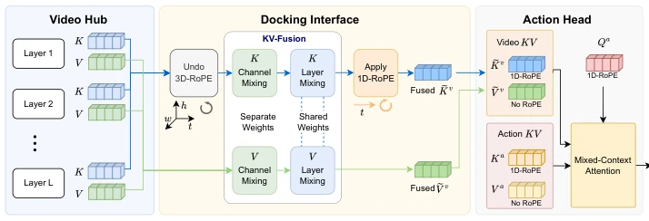
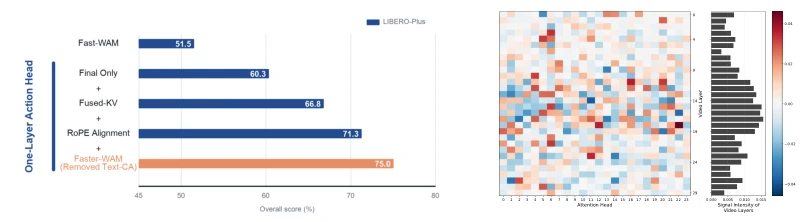

这篇论文给 WAM 界做了个“断舍离”。作者质疑：世界动作模型真的需要和视频骨干一样深的动作模块吗？答案是否定的。他们把动作头砍到只剩一层，却靠着“Dock of Transformers”架构，让这层瘦子能直接读取 30 层视频骨干的全身知识。Fast-WAM 这种老派 MoT 设计，动作头深度硬套视频深度，推理慢得像老牛拉车。Faster-WAM 不仅快（66.5ms），性能还稳，甚至泛化性更强。不过，这种“轻头重身”的设计会不会在极端复杂任务下露馅？目前看 LIBERO-Plus 表现不错，但毕竟没上真机，仿真到真实的鸿沟还得自己跨。这种设计哲学暗示了预训练视频模型的价值被低估，动作预测其实不需要那么多参数堆砌。
This paper brings a 'decluttering' to the WAM community. The authors question: Do World Action Models really need action modules as deep as video backbones? The answer is no. They cut the action head down to a single layer, yet relying on the 'Dock of Transformers' architecture, allowing this slender layer to directly read the holistic knowledge of the 30-layer video backbone. Fast-WAM, this old-school MoT design, forces action head depth to match video depth, making inference as slow as an old ox pulling a cart. Faster-WAM is not only fast (66.5ms), but also stable in performance, even with stronger generalization. However, will this 'light head heavy body' design reveal its flaws under extremely complex tasks? Currently, LIBERO-Plus performs well, but since it hasn't been deployed on real robots, the gap from simulation to reality still needs to be crossed. This design philosophy implies that the value of pre-trained video models is underestimated, and action prediction actually does not require so much parameter stacking.
Existing WAM architectures (such as Fast-WAM, Motus) typically adopt Mixture-of-Transformers (MoT) design, requiring action module depth to align with video backbone to support single-step joint training. This results in huge computational overhead for action prediction, with inference latency reaching up to 211.7ms, far exceeding VLA models (e.g., π0.5's 71.4ms). Although video world models can capture physical dynamics, low efficiency limits real-time control. The authors point out that the video backbone already contains physical priors, and the action module does not need to relearn them. Therefore, there is an urgent need for an architecture that decouples action depth from video depth, matching VLA inference speed while maintaining control performance. The one-to-one correspondence between video and action layers in MoT methods limits lightweighting, while variants like H-Bridge are still constrained by fixed interaction layers.
方法Method
核心是 Dock of Transformers (DoT) 框架。视频 Transformer 作为“表示枢纽”，任务头通过“对接接口”接入。具体实现 Faster-WAM 包含两个关键创新：1. KV-Fusion：将 30 层视频骨干的 Key/Value 缓存通过通道混合和层聚合，融合成一个统一的 KV 缓存供单层动作头使用，打破了一对一层的限制。2. Video-Action RoPE Alignment：解决视频 3D RoPE 与动作 1D RoPE 的基座不匹配问题，先解旋转再融合，最后重新应用 1D RoPE。动作头移除文本交叉注意力，语言信息通过视频骨干路由，进一步轻量化。这使得单层动作头能复用全深度视频特征，无需重新学习物理动态。
The core is the Dock of Transformers (DoT) framework. The video Transformer serves as a 'representation hub', with the task head connecting via a 'docking interface'. The specific implementation Faster-WAM includes two key innovations: 1. KV-Fusion: The Key/Value caches of the 30-layer video backbone are fused into a unified KV cache for use by the single-layer action head through channel mixing and layer aggregation, breaking the one-to-one layer limitation. 2. Video-Action RoPE Alignment: Solves the base mismatch problem between video 3D RoPE and action 1D RoPE, first unrotating then fusing, finally reapplying 1D RoPE. The action head removes text cross-attention, language information is routed through the video backbone, further lightweighting. This allows the single-layer action head to reuse full-depth video features without needing to relearn physical dynamics.

Figure 1: Comparison of representative WAM architectures. MoT uses one-to-one video–action layer correspondence, while H-Bridge (Team et al., 2026) restricts cross-stream interaction to fixed intermediate layers. In contrast, DoT treats the video backbone as a representation hub that task-specific nodes access through flexible docking interfaces.

Figure 2: DoT architecture treats a pretrained video DiT as a representation hub and attaches lightweight task heads through an explicit docking interface. Faster-WAM instantiates DoT with KV-Fusion and video–action RoPE alignment. 3 Method
Tested on LIBERO, RoboTwin 2.0, LIBERO-Plus. Baselines include π0, π0.5, Fast-WAM, Motus, etc. Faster-WAM achieves 98.5% success rate on LIBERO, matching Fast-WAM but with latency of only 66.5ms (3.2x speedup). Performance on RoboTwin 2.0 is close to Fast-WAM. In LIBERO-Plus generalization tests, Faster-WAM significantly outperforms Fast-WAM (75.0% vs 51.5%), especially with huge improvements under camera perturbation and sensor noise. Ablation experiments prove that KV-Fusion and RoPE alignment are crucial for performance, and removing text cross-attention actually improved results. This indicates that the video backbone is sufficient to carry language instructions, and the action head only needs to focus on prediction.

Figure 3: Analysis of Faster-WAM on LIBERO-Plus: (a) sequential design contributions and (b) KV-Fusion signals across video layers and attention heads.